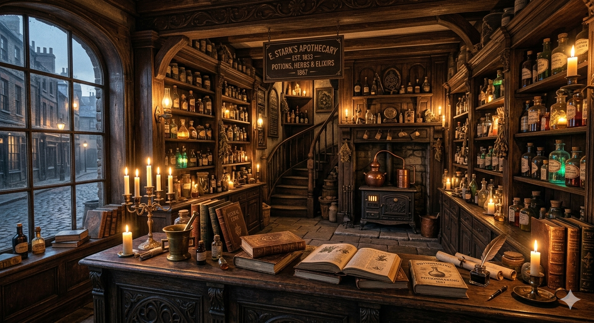
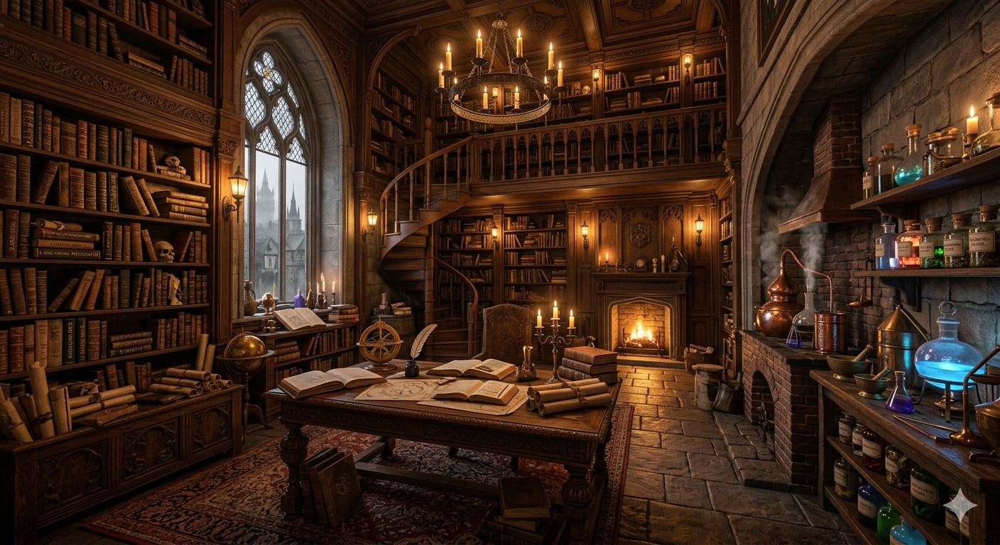

Desde 1867 fornecendo elixires, poções e artefatos alquímicos para bruxos, alquimistas e aventureiros de todo o reino.
Situada no lendário Beco da Última Saída, a Poções & Soluções é uma das mais antigas e respeitadas fornecedoras de poções mágicas do continente. Nossos mestres alquimistas produzem cada fórmula seguindo tradições centenárias transmitidas por gerações.
Seja para inspiração, sorte, beleza ou mistérios indescritíveis, temos a solução perfeita para sua próxima aventura.
Fundada em 1867 por Annabelle Merigold, a loja começou como um pequeno laboratório alquímico escondido entre vielas mágicas. Com o passar das décadas, tornou-se referência na criação de poções raras e ingredientes extraordinários.
Mais de 150 anos depois, continuamos combinando tradição e inovação para levar magia aos nossos clientes.

O pequeno laboratório fundado por Annabelle Merigold, onde as primeiras poções da Poções & Soluções foram criadas.

O coração da produção alquímica da loja, onde receitas centenárias continuam sendo preparadas até os dias atuais.